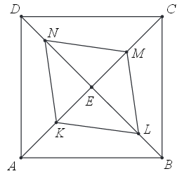

Matura 2015 maj
Wskaż rysunek na którym przedstawiono przedział, będący zbiorem wszystkich
rozwiązań nierówności \(-4\le x-1\le 4\). 
C (na filmiku D)
Dane są liczby \(a=-\frac{1}{27}\), \(b=\log_{\frac{1}{4}}64\),
\(c=\log_{\frac{1}{3}}27\). Iloczyn \(abc\) jest równy
A.\( 3 \)
B.\( \frac{1}{3} \)
C.\( -\frac{1}{3} \)
D.\( -9 \)
C
Kwotę \(1000\) zł ulokowano w banku na roczną lokatę oprocentowaną w wysokości
\(4\%\) w stosunku rocznym. Po zakończeniu lokaty od naliczonych odsetek odprowadzany jest podatek w
wysokości \(19\%\). Maksymalna kwota, jaką po upływie roku będzie można wypłacić z banku, jest równa
A.\( 1000\cdot \left ( 1+\frac{81}{100}\cdot \frac{4}{100} \right ) \)
B.\( 1000\cdot \left ( 1-\frac{19}{100}\cdot \frac{4}{100} \right ) \)
C.\( 1000\cdot \left ( 1-\frac{81}{100}\cdot \frac{4}{100} \right ) \)
D.\( 1000\cdot \left ( 1+\frac{19}{100}\cdot \frac{4}{100} \right ) \)
A
Równość \(\frac{m}{5-\sqrt{5}}=\frac{5+\sqrt{5}}{5}\) zachodzi dla
A.\( m=-5 \)
B.\( m=1 \)
C.\( m=4 \)
D.\( m=5 \)
C
Układ równań \(\begin{cases} x-y=3 \\ 2x+0{,}5y=4 \end{cases} \) opisuje w układzie
współrzędnych na płaszczyźnie
A.zbiór nieskończony.
B.dokładnie 2 różne punkty.
C.dokładnie jeden punkt.
D.zbiór pusty.
C
Suma wszystkich pierwiastków równania \((x+3)(x+7)(x-11)=0\) jest równa
A.\( 21 \)
B.\( -1 \)
C.\( -21 \)
D.\( 1 \)
D
Równanie \(\frac{x-1}{x+1}=x-1\)
A.ma dokładnie dwa rozwiązania \( x=0 \), \(x=1\)
B.ma dokładnie jedno rozwiązanie \( x=-1 \)
C.ma dokładnie jedno rozwiązanie \( x=0 \)
D.ma dokładnie jedno rozwiązanie \( x=1 \)
A
Na rysunku przedstawiono wykres funkcji \(f\).  Zbiorem wartości funkcji \(f\) jest
Zbiorem wartości funkcji \(f\) jest
Zbiorem wartości funkcji \(f\) jest A.\( (-2,2\rangle \)
B.\( \langle -2,2\rangle \)
C.\( \langle -2,2) \)
D.\( (-2,2) \)
A
Na wykresie funkcji liniowej określonej wzorem \(f(x)=(m-1)x+3\) leży punkt
\(S=(5,-2)\). Zatem
A.\( m=1 \)
B.\( m=2 \)
C.\( m=-1 \)
D.\( m=0 \)
D
Funkcja liniowa \(f\) określona wzorem \(f(x)=2x+b\) ma takie samo miejsce zerowe,
jakie ma funkcja \(g(x)=-3x+4\). Stąd wynika, że
A.\( b=-\frac{8}{3} \)
B.\( b=\frac{4}{3} \)
C.\( b=4 \)
D.\( b=-\frac{3}{2} \)
A
Funkcja kwadratowa określona jest wzorem \(f(x)=x^2+x+c\). Jeśli \(f(3)=4\), to
A.\( f(1)=18 \)
B.\( f(1)=6 \)
C.\( f(1)=0 \)
D.\( f(1)=-6 \)
D
Ile liczb całkowitych \(x\) spełnia nierówność \(\frac{2}{7}\lt \frac{x}{14}\lt
\frac{4}{3}\)?
A.\( 17 \)
B.\( 16 \)
C.\( 15 \)
D.\( 14 \)
D
W rosnącym ciągu geometrycznym \((a_n)\), określonym dla \(n\ge 1\), spełniony jest
warunek \(a_4=3a_1\). Iloraz \(q\) tego ciągu jest równy
A.\( q=\frac{1}{\sqrt[3]{3}} \)
B.\( q=\frac{1}{3} \)
C.\( q=3 \)
D.\( q=\sqrt[3]{3} \)
D
W układzie współrzędnych zaznaczono punkt \(P=(-4,5)\). Tangens kąta \(\alpha \)
zaznaczonego na rysunku jest równy
A.\( -\frac{5}{4} \)
B.\( -1 \)
C.\( -\frac{4}{5} \)
D.\( -\frac{\sqrt{3}}{3} \)
A
Jeżeli \(0^\circ \lt \alpha \lt 90^\circ \) oraz \(\operatorname{tg} \alpha =2\sin
\alpha \), to
A.\( \cos \alpha =\frac{\sqrt{2}}{2} \)
B.\( \cos \alpha =\frac{1}{2} \)
C.\( \cos \alpha =1 \)
D.\( \cos \alpha =\frac{\sqrt{3}}{2} \)
B
Miara kąta wpisanego w okrąg jest o \(20^\circ \) mniejsza od miary kąta środkowego
opartego na tym samym łuku. Wynika stąd, że miara kąta wpisanego jest równa
A.\( 30^\circ \)
B.\( 20^\circ \)
C.\( 10^\circ \)
D.\( 5^\circ \)
B
Pole rombu o obwodzie \(8\) jest równe \(1\). Kąt ostry tego rombu ma miarę
\(\alpha \). Wtedy
A.\( 29^\circ \lt \alpha \lt 30^\circ \)
B.\( 14^\circ \lt \alpha \lt 15^\circ \)
C.\( 75^\circ \lt \alpha \lt 76^\circ \)
D.\( 60^\circ \lt \alpha \lt 61^\circ \)
B
Prosta \(l\) o równaniu \(y=m^2x+3\) jest równoległa do prostej \(k\) o równaniu
\(y=(4m-4)x-3\). Zatem:
A.\( m=2 \)
B.\( m=-2 \)
C.\( m=-2-2\sqrt{2} \)
D.\( m=2+2\sqrt{2} \)
A
Proste o równaniach: \(y=2mx-m^2-1\) oraz \(y=4m^2x+m^2+1\) są prostopadłe dla
A.\( m=-\frac{1}{2} \)
B.\( m=\frac{1}{2} \)
C.\( m=1 \)
D.\( m=2 \)
A
Dane są punkty \(M=(-2,1)\) i \(N=(-1,3)\). Punkt \(K\) jest środkiem odcinka
\(MN\). Obrazem punktu \(K\) w symetrii względem początku układu współrzędnych jest punkt
A.\( K'=\left ( 2,-\frac{3}{2} \right ) \)
B.\( K'=\left ( 2,\frac{3}{2} \right ) \)
C.\( K'=\left ( \frac{3}{2},2 \right ) \)
D.\( K'=\left ( \frac{3}{2},-2 \right ) \)
D
W graniastosłupie prawidłowym czworokątnym \(EFGHIJKL\) wierzchołki \(E, G, L\)
połączono odcinkami (tak jak na rysunku). Wskaż kąt między wysokością \(OL\) trójkąta \(EGL\) i płaszczyzną podstawy tego
graniastosłupa.
A.\( \sphericalangle OGL \)
B.\( \sphericalangle HOL \)
C.\( \sphericalangle HLO \)
D.\( \sphericalangle OHL \)
B
Przekrojem osiowym stożka jest trójkąt równoboczny o boku długości \(6\). Objętość
tego stożka jest równa
A.\( 6\pi \)
B.\( 18\pi \)
C.\( 9\pi\sqrt{3} \)
D.\( 27\pi\sqrt{3} \)
C
Każda krawędź graniastosłupa prawidłowego trójkątnego ma długość równą \(8\). Pole
powierzchni całkowitej tego graniastosłupa jest równe
A.\( 8^2\left ( \frac{\sqrt{3}}{2}+3 \right ) \)
B.\( \frac{8^2\sqrt{6}}{3} \)
C.\( 8^2\cdot \sqrt{3} \)
D.\( \frac{8^2}{3}\left ( \frac{\sqrt{3}}{2}+3 \right ) \)
A
Średnia arytmetyczna zestawu danych: \[2,4,7,8,9\] jest taka sama jak średnia
arytmetyczna zestawu danych: \[2,4,7,8,9,x.\] Wynika stąd, że
A.\( x=3 \)
B.\( x=5 \)
C.\( x=6 \)
D.\( x=0 \)
C
W każdym z trzech pojemników znajduje się para kul, z których jedna jest czerwona,
a druga - niebieska. Z każdego pojemnika losujemy jedną kulę. Niech \(p\) oznacza prawdopodobieństwo
zdarzenia polegającego na tym, że dokładnie dwie z trzech wylosowanych kul będą czerwone. Wtedy
A.\( p=\frac{3}{8} \)
B.\( p=\frac{1}{4} \)
C.\( p=\frac{2}{3} \)
D.\( p=\frac{1}{2} \)
A
Rozwiąż nierówność \(2x^2-4x\gt (x+3)(x-2)\).
\(x\in (-\infty ;2)\cup (3;+\infty )\)
Wykaż, że dla każdej liczby rzeczywistej \(x\) i dla każdej liczby rzeczywistej
\(y\) prawdziwa jest nierówność \(4x^2-8xy+5y^2\ge 0\).
Dany jest kwadrat \(ABCD\). Przekątne \(AC\) i \(BD\) przecinają się w punkcie
\(E\). Punkty \(K\) i \(M\) są środkami odcinków - odpowiednio \(AE\) i \(EC\). Punkty \(L\) i \(N\)
leżą na przekątnej \(BD\) tak, że \(|BL|=\frac{1}{3}|BE|\) i \(|DN|=\frac{1}{3}|DE|\) (zobacz
rysunek). Wykaż, że stosunek pola czworokąta \(KLMN\) do pola kwadratu \(ABCD\) jest równy \(1:3\).

Oblicz najmniejszą i największą wartość funkcji kwadratowej \(f(x)=x^2-6x+3\) w
przedziale \(\langle 0,4\rangle \).
\(f_{max}=3\) oraz \(f_{min}=-6\)
W układzie współrzędnych dane są punkty \(A=(-43,-12)\), \(B=(50,19)\). Prosta
\(AB\) przecina oś \(Ox\) w punkcie \(P\). Oblicz pierwszą współrzędną punktu \(P\).
\(x=-7\)
Jeżeli do licznika i do mianownik nieskracalnego dodatniego ułamka dodamy połowę
jego licznika, to otrzymamy \(\frac{4}{7}\), a jeżeli do licznika i do mianownika dodamy \(1\), to
otrzymamy \(\frac{1}{2}\). Wyznacz ten ułamek.
\(\frac{8}{17}\)
Wysokość graniastosłupa prawidłowego czworokątnego jest równa \(16\). Przekątna
graniastosłupa jest nachylona do płaszczyzny podstawy pod kątem, którego cosinus jest równy
\(\frac{3}{5}\). Oblicz pole powierzchni całkowitej tego graniastosłupa.
\(P=144+384\sqrt{2}\)
Wśród \(115\) osób przeprowadzono badania ankietowe, związane z zakupami w pewnym
kiosku. W poniższej tabeli przedstawiono informacje o tym, ile osób kupiło bilety tramwajowe ulgowe
oraz ile osób kupiło bilety tramwajowe normalne.
| Rodzaj kupionych biletów | Liczba osób |
| ulgowe | 76 |
| normalne | 41 |
Uwaga! \(27\) osób spośród ankietowanych kupiło oba rodzaje biletów.
Oblicz prawdopodobieństwo zdarzenia polegającego na tym, że osoba losowo wybrana spośród
ankietowanych nie kupiła żadnego biletu. Wynik przedstaw w formie nieskracalnego ułamka.
\(\frac{5}{23}\)
W nieskończonym ciągu arytmetycznym \((a_n)\), określonym dla \(n\ge 1\), suma
jedenastu początkowych wyrazów tego ciągu jest równa \(187\). Średnia arytmetyczna pierwszego,
trzeciego i dziewiątego wyrazu tego ciągu, jest równa \(12\). Wyrazy \(a_1, a_3, a_k\) ciągu
\((a_n)\), w podanej kolejności, tworzą nowy ciąg - trzywyrazowy ciąg geometryczny \((b_n)\). Oblicz
\(k\).
\(k=11\)